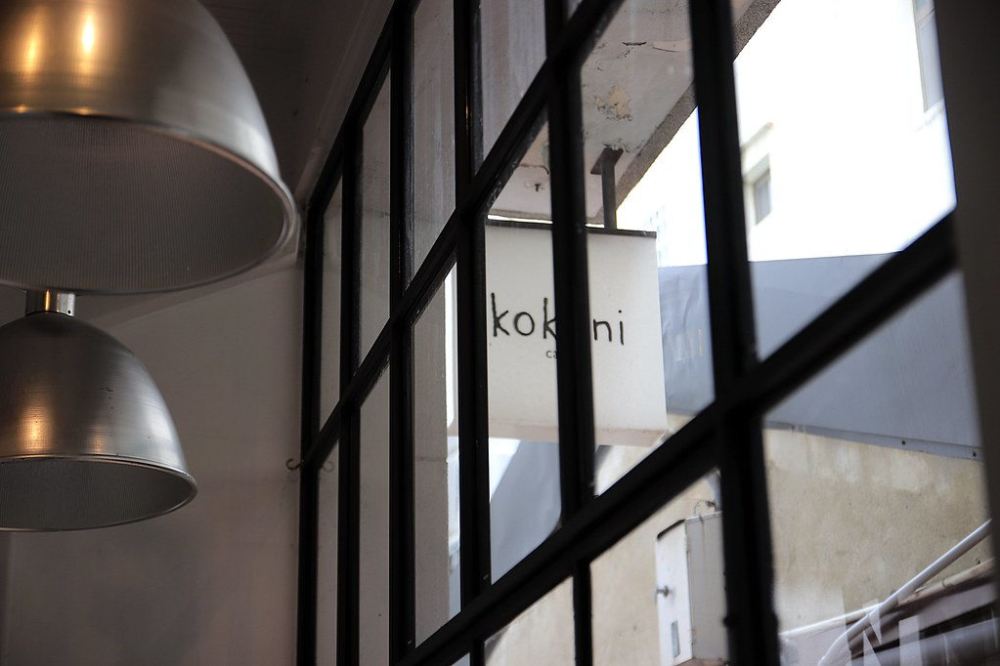
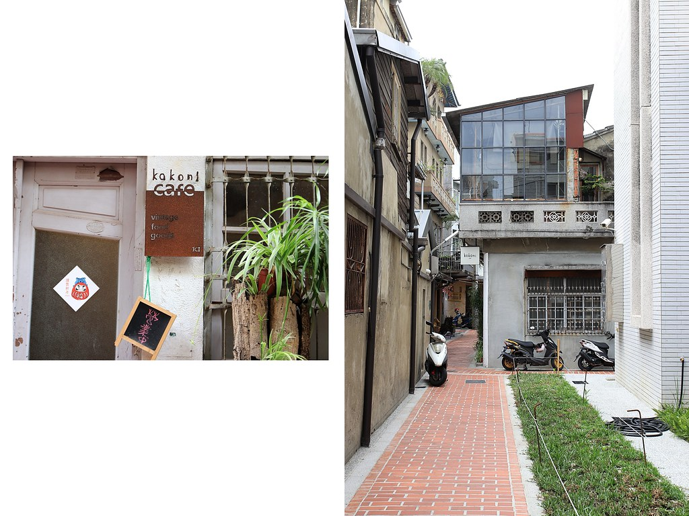
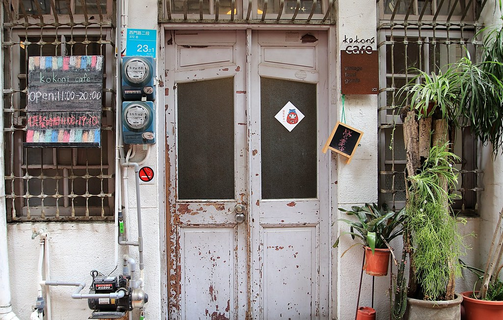
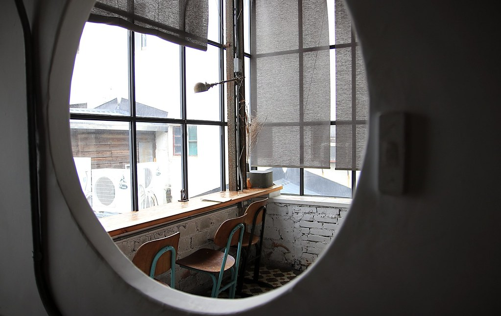
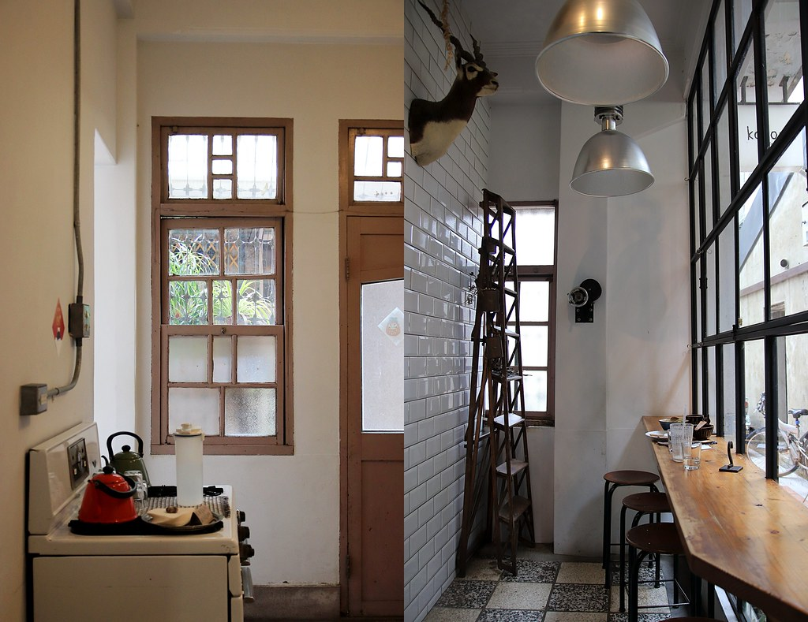
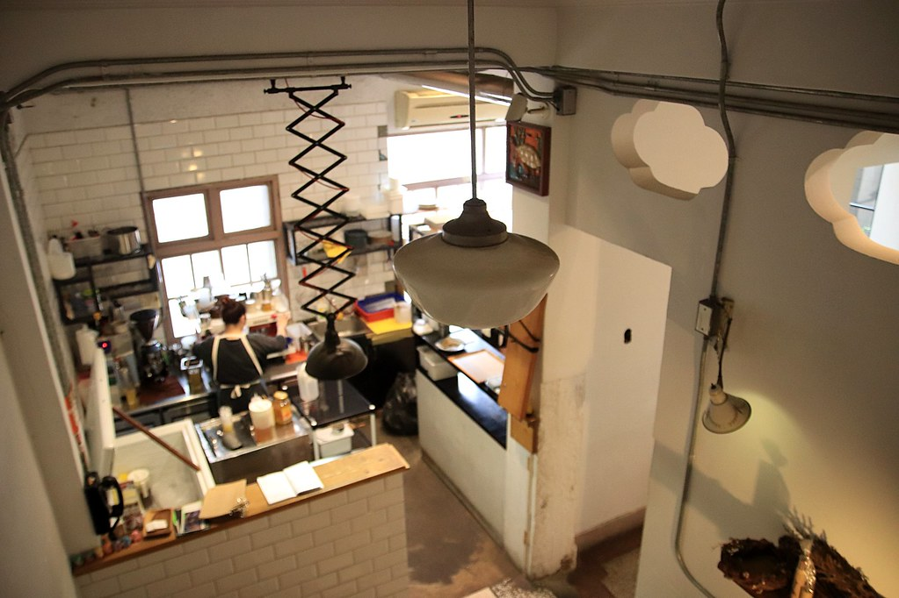
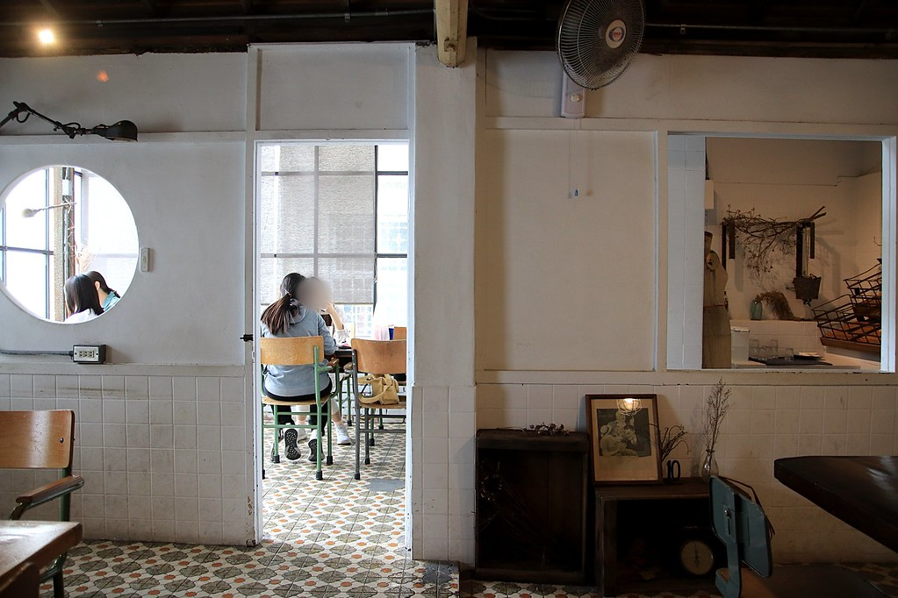
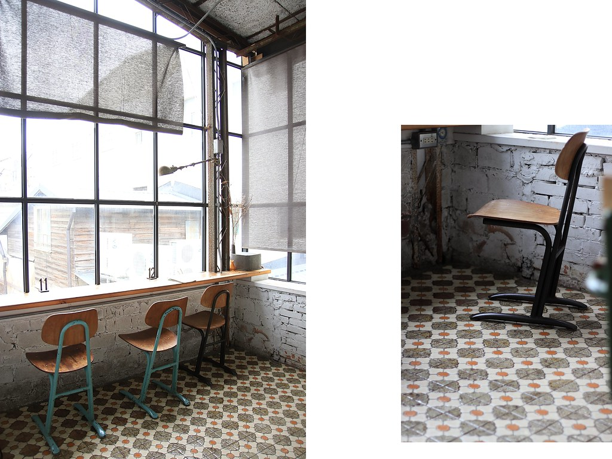
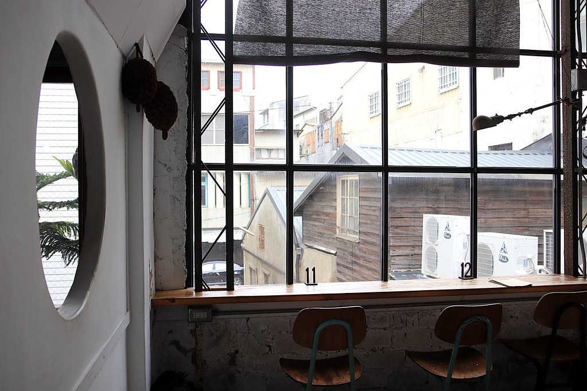

台南赤崁樓新美街裡的巷弄咖啡館，最美老屋早午餐！不斷回訪總是滿滿驚喜

台南｜kokoni cafe

台南｜kokoni cafe
kokoni cafe 就在 Nani麵 旁的巷子裡，是我們這幾年回台南玩最常回訪的咖啡店，位置就在 台南中西區 熱鬧的 赤崁樓 赤崁商圈 新美街 巷子旁，kokoni cafe 不只有烏龍麵、蓋飯等日韓鹹食料理，還有少見的半月燒、鬆餅等甜點，不管是想吃早午餐、午餐或者下午茶咖啡時光，台南老屋咖啡館 kokoni cafe 都是一個很棒的選擇！
大概六七年前就一吃成主顧，這幾年已無數次Ｎ訪我們的愛店 kokoni cafe（之前森山市集我們也會專程去找他們），隔一陣子來總會有驚喜！草莓季、芒果季，甚至之前還有滿滿香菜的香菜咖哩飯，新鮮感十足且道道令人驚艷，去年因為疫情火紅到 IG 滿滿都是的半月燒禮盒，也是他們家的！kokoni cafe 的半月燒和阿嬤の甜粿鬆餅，已是我們近幾次回訪的必點選擇，吃過就愛上～～～回到台中還會想念的那種


不知不覺已無數次Ｎ訪的 kokoni cafe，我們應該也算是看著它長大了吧！
說真的在這個什麼都很快、餐廳開的快也收的快的時代，一間店如果沒有一定的水準，有時候要撐過一年都不容易。而這間台南老屋咖啡店 kokoni cafe 早在很多人心裡打上了「必訪」的勾勾，而我們更是將它收進了常訪口袋裡，在這裡吃過的料理、甜點已無法輕鬆，而這次來是在 Nani麵 飽食沾麵後來吃甜點，喝杯冰涼的飲料放鬆放鬆。
如果你（妳）需要台南美食必吃名單，相信我 Nani麵 和 kokoni cafe 絕對可以一次排進行程裡！兩間之間走路大概１分鐘，兩間老屋一次收藏美翻了～



雖然已來過好幾回，來到像是走自己家廚房的熟悉，但每每來還是會這老房子吸引，看著它在時間的累積下，漸漸有了另一種味道，再翻閱過去第一次來的照片，便能知道有些東西是再怎麼營造都無法營造出來的，譬如「生活感」，這幾年 kokoni cafe 多了更多的生活感，就像是老夫老妻因為柴米油鹽醬醋茶堆疊出的情感，無法頂替也沒人可以頂替。


